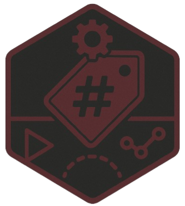

METATAGDB PROTOTYPING // SCHEMA DESIGN
ProtoTag
ProtoTag is a prototype video tagging environment for designing and testing MetaTagDB schemas, metadata rules, and user workflows in both CLI and PyQt5 GUI modes.
Fields0

METATAGDB PROTOTYPING // SCHEMA DESIGN
ProtoTag is a prototype video tagging environment for designing and testing MetaTagDB schemas, metadata rules, and user workflows in both CLI and PyQt5 GUI modes.